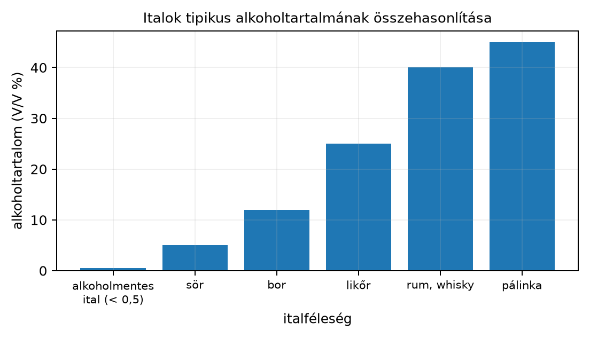
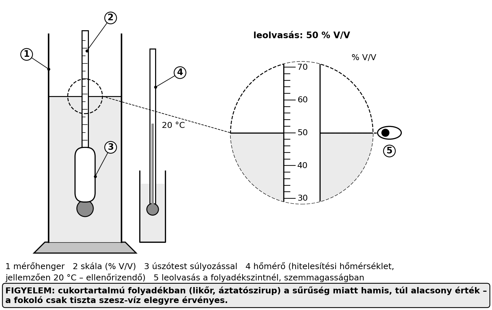

Egy cukrászműhelyben az italok kettős szerepet játszanak: a vendégtérben fogyasztott termékként, illetve a konyhában felhasznált alapanyagként jelennek meg. Ha egy bonbonba rumos ganache-t készítesz, vagy egy Dobos torta piskótáját cukorsziruppal és alkohollal ízesíted, pontosan tudnod kell, mekkora az ital alkoholtartalma. Ha túl erősre hagyod, a termék élvezhetetlen lesz; ha túl hígítod, az alkohol nem fejti ki tartósító vagy aromakiemelő hatását. Ugyanakkor az alkohol jogi és élelmiszerbiztonsági kérdéseket is felvet, különösen akkor, ha a készítményt gyermekek is fogyaszthatják. Ebben az alfejezetben megismered az italok csoportjait, az alkoholtartalom mérését szeszfokolóval, és az alkohol cukrászati felhasználásának szabályait.
Az alábbi ábra az egyes italkategóriák tipikus alkoholtartalmát mutatja, hogy lásd a nagyságrendi különbségeket. A pontos értékek termékenként és jogszabályi kategóriánként változnak, ezért az ábra csak tájékoztató jellegű.

A cukrászati felhasználás szempontjából nem mindegy, hogy erjesztett italt (bor, sör), párlatot (pálinka, gyümölcspárlat), likőrt (gyümölcsre, fűszerre, tejszínre alapozott édes szeszes italt), vagy alkoholmentes italt (gyümölcslé, szörp, szénsavas üdítő) használsz. A bor és a sör összetett ízű, de alacsonyabb alkoholtartalmú; a párlatok aromásak és magasabb koncentrációjúak; a likőrök édesek és sűrűbbek; az alkoholmentes italok hígítanak és frissítenek.
Definíció. Az ital olyan folyékony élelmiszer, amelyet fogyasztásra szánnak, és amely lehet alkoholtartalmú vagy alkoholmentes. Cukrászati alapanyagként és késztermék-összetevőként is használjuk.
Definíció. Az alkoholtartalom azt fejezi ki, hogy az ital teljes térfogatának hány százaléka a benne oldott etil-alkohol (etanol). Jele a magyar gyakorlatban: V/V %, vagyis térfogatszázalék. A V/V %-os pálinka azt jelenti, hogy pálinkában tiszta etanol van, a többi víz, aromaanyag és egyéb oldott komponens.
Csoportosítás a cukrászati felhasználás szerint
Jogszabály. Az alkoholtartalmú italok megnevezésére, címkézésére, előállítására és forgalmazására Magyarországon és az EU-ban külön szabályok vonatkoznak. A pálinka megnevezés földrajzi árujelzőként is védett, ezért nem használható bármilyen gyümölcspárlatra. Cukrászati technológiai útmutatóban mindig tüntesd fel a felhasznált ital pontos nevét, alkoholtartalmát és adagját. Ha a készterméken alkoholtartalmat jelölsz vagy alkoholmentes állítást teszel, a fogyasztói tájékoztatásra vonatkozó szabályokat kell követned. (ellenőrizendő: hatályos uniós és magyar italmegnevezési, címkézési és jövedéki szabályok – 2019/787/EU rendelet, 1169/2011/EU rendelet, magyar italtörvény és végrehajtási rendeletei)
Szeszfokoló alatt két dolgot érthetünk: magát a mérőműszert, azaz az alkoholmérő fokolót (areométert), vagy a mérési eljárást. A cukrászüzemben leggyakrabban az előbbi, egy üveg fokoló van használatban.
A mérés elve. Az etanol sűrűsége kisebb, mint a vízé. Minél több alkoholt tartalmaz egy vizes oldat, annál kisebb a sűrűsége. Egy megfelelően kalibrált, alkohol-víz elegyre skálázott úszó sűrűségmérővel tehát a folyadékba merülve, a meniszkuszon leolvasott értékből közvetlenül megbecsülhető az alkoholtartalom térfogatszázalékban. Fontos: a fokoló csak etanol-víz elegyekre, vagy ahhoz közeli összetételű, cukorban szegény párlatokra érvényes. Likőr, bor, sör, cukorszirupos keverék esetén a benne oldott cukor és egyéb extrakt növeli a sűrűséget, ezért a fokoló hamis, túl alacsony alkoholtartalmat mutat. (ellenőrizendő: a gyártó használati utasítása a mérési tartományra és a zavaró anyagokra)
Mérési lépések

Az ábrán a mérőhengerben (1) szabadon úszik a súlyozott úszótestű (3) szeszfokoló; a skála (2) térfogatszázalékban mutatja az alkoholtartalmat, mellette a hőmérő (4) a minta hőmérsékletét. A kinagyított részleten a leolvasás a folyadékszintnél, szemmagasságban történik (5); a példában 50 % V/V. A figyelmeztetés a korlátot ismétli: cukortartalmú folyadékban a fokoló túl alacsony, hamis értéket mutat.
A gyakorlati korrekcióhoz: ha a minta melegebb, mint a hitelesítési hőmérséklet, a leolvasott alkoholtartalom nagyobb a valóságosnál (a melegebb elegy sűrűsége kisebb, a fokoló mélyebbre merül); ha hidegebb, kisebb. A korrekciót melegebb mintánál tehát le kell vonni, hidegebbnél hozzá kell adni. A pontos átszámításhoz táblázatot vagy korrekciós képletet kell használni. Tájékoztató jelleggel, híg vizes-alkoholos oldatnál: minden eltérés kb. – V/V % hibát okozhat (ellenőrizendő: hőmérséklet-korrekciós táblázat). Cukrászati üzemi használatra a gyártói adatlap és a kalibrálási bizonylat az irányadó.
Gyakorlati példa. Egy hőmérsékletű párlatban a fokoló V/V %-ot mutat. A fokoló -ra hitelesített, a korrekciós tényező V/V % per . Mivel a minta melegebb, a fokoló a valóságosnál nagyobb értéket mutat, ezért a korrekciót le kell vonni (a tanulási példa korrekciós tényezője egyszerűsített; tömény párlatnál a hivatalos alkoholometriai táblázatot használd, ellenőrizendő):
Ez a korrekció itt kicsi, de eltérésnél már – V/V % is lehet, ami érzékszervileg és technológiailag is számít.
Korlátozás. Cukros, extraktban gazdag italoknál (likőr, borpárlat, édes áztatólé) a fokolóval nyert érték nem valós alkoholtartalom. Ilyenkor desztillálásos módszer, sűrűségmérés + extrakttartalom-táblázat, vagy laboratóriumi vizsgálat szükséges. A cukrászati üzemekben gyakran elegendő a beszállítói adatlap és a címke alkoholtartalmának használata, majd a keverési arányokból történő számítás.
Amikor cukorszirupot keverünk alkohollal, a kész keverék alkoholtartalmát a kiindulási anyagok térfogatából és alkoholtartalmából becsülhetjük. Feltételezzük, hogy a térfogatok összeadhatók, és hogy a cukor nem tartalmaz alkoholt. A valóságban a folyadékok elegyedésekor kismértékű térfogatcsökkenés (kontrakció) is felléphet, ezért az alábbi képlet közelítő. A pontos értékhez mérést vagy alkoholos oldatok sűrűségtáblázatát kell használni. (ellenőrizendő: alkohol-víz elegyek sűrűség- és térfogat-táblázata)
Szabály. Ha egy térfogatú, V/V % alkoholtartalmú italt összekeverünk egy térfogatú, alkoholmentes folyadékkal, akkor a keverék közelítő alkoholtartalma:
Számítás 1. Készítesz rumos áztatószirupot. Felhasználsz , V/V %-os rumot és cukorszirupot, amely tömegszázalékos, de alkoholt nem tartalmaz. Mennyi lesz a keverék közelítő alkoholtartalma?
Adott: , V/V %, .
A tiszta alkohol térfogata a rumban:
A keverék össztérfogata közelítőleg , tehát:
Válasz: az áztatószirup alkoholtartalma kb. V/V %. Ezt csokoládéba keverve tovább hígul, ám a ganache-ban is kiszámítható a végső alkoholtartalom.
Számítás 2. Egy bonbonüregbe alkoholos ganache-t töltesz, amely a receptúra szerint kb. V/V % alkoholt tartalmaz (tanulási példa). A ganache sűrűségét -nek méred (ellenőrizendő: gyártói mérés), ezért térfogata kb.
A ganache-ban lévő tiszta alkohol térfogata:
Egy bonbon tehát kb. tiszta etanolt tartalmaz. Ha egy vendég db bonbont eszik, az alkoholmennyiség kb. tiszta etanol, ami érzékszervileg érezhető, de önmagában nem helyettesíti az italozást. Gyermekeknek szánt bonbonba ennyi alkoholt sem szabad tenni.
Az alkoholmentes italokat két nagy csoportra bontjuk a cukrászati felhasználás szempontjából:
Megjegyzés. A „gyümölcslé”, „nektár”, „szörp”, „üdítőital” megnevezések jogilag szabályozottak. A címkén feltüntetett gyümölcstartalom alapján tudod eldönteni, hogy az adott termék hígított gyümölcslé-e vagy csak aroma alapú üdítő. (ellenőrizendő: gyümölcslevekre és egyes hasonló termékekre vonatkozó uniós irányelv és magyar átültetése, Magyar Élelmiszerkönyv előírásai)
Az alkoholt a cukrászati technológiában három célra használjuk:
Higiénia. Az alkoholos áztatásnál és tartósításnál ugyanúgy be kell tartani a higiéniai munkakezdést: tiszta kéz és eszközök, zárható, élelmiszerrel érintkezésre alkalmas edény, hűtött tárolás, lefedve. Az alkohol nem sterilizálja a nyersanyagot és nem teszi lehetővé a lejárt vagy romlott gyümölcs „megmentését”.
Figyelem. A magas alkoholtartalmú párlatok gyúlékonyak. Nyílt láng közelében sose önts párlatot, és az alkohollal átitatott tésztát vagy gyümölcsöt ne tedd forró sütőbe úgy, hogy az edényben alkoholgőz gyűlhet össze. Flambírozás (alkohollal leöntés és meggyújtás) a cukrászüzemben csak szabályozott, felelős körülmények között, a tűzvédelmi szabályok szerint végezhető; tanuló csak oktató felügyeletével tegye.
Tilos. Denaturált szeszt, ipari alkoholt, nem élelmiszer célra szánt alkoholt cukrászati termékbe tenni. Csak fogyasztásra alkalmas, élelmiszer-minőségű etil-alkoholt vagy élelmiszerként forgalmazott szeszes italt használhatsz.
Jogszabály. A gyermekek védelme érdekében a kiskorúaknak szánt, vagy várhatóan általuk fogyasztott élelmiszerekben az alkohol használata kerülendő, vagy szigorúan korlátozandó. A vendéglátó és cukrász szakmai gyakorlatban a gyermekmenübe, bölcsődei, óvodai, iskolai étkeztetésbe szánt desszertbe alkoholtartalmú alapanyagot nem teszünk. Ha a termék mégis tartalmaz alkoholt, azt a fogyasztói tájékoztatáson jelezni kell, és a gyermekek számára értékesített adagot úgy kell kialakítani, hogy alkohol ne legyen benne. (ellenőrizendő: hatályos fogyasztóvédelmi és vendéglátás-ipari ajánlások, iskolai menzai szabályozás)
A gyakorlatban ez azt jelenti, hogy egy gyermekzsúrra rendelt tortához alkoholmentes piskótaszirupot készítesz, és a töltelékbe sem keverünk rumot vagy likőrt. Ha a felnőtt torta mellett gyermekadagot is kérnek, az alkoholos réteget külön kell választani.
Az alábbiakban egy rumos áztatószirup készítését mutatjuk be. Ezt a félkész terméket piskóta áztatására, bonbonokba, fagylaltbetétként és aszalt gyümölcsök előkészítésére is felhasználhatod.
Technológiai lap. Rumos áztatószirup, alapmennyiség: kész szirup.
| Nyersanyag | Mennyiség | Megjegyzés |
|---|---|---|
| Víz | ivóvíz | |
| Kristálycukor | szacharóz | |
| Rum | V/V % alkoholtartalommal | |
| Vanília kivonat vagy aroma | élelmiszer-minőségű (ellenőrizendő: adalékanyag-szabály) | |
| Összesen | kb. / | a sűrűség miatt a térfogat és a tömeg nem azonos |
Biztonsági korlát. A forró cukorszirup égésveszélyt jelent. A rumot tilos forró főzőlapon vagy nyílt láng közelében adagolni. A műveletet jól szellőző helyen, tanműhelyben oktató felügyeletével, otthon kis adagban, felnőtt jelenlétében végezd.
Az alkoholos szirup minőségét a következő szempontok szerint ellenőrizd:
| Szempont | Megfelelőség jele | Lehetséges hiba |
|---|---|---|
| Átlátszóság | Tiszta, áttetsző | Opálos, zavaros |
| Szín | Aranysárgás, halványbarna | Sötétbarna, lebegő részecskék |
| Illat | Tiszta rum, vanília, édeskés | Cefre, élesztős, csípős |
| Íz | Édes, enyhén alkoholos, fűszeres | Keserű, karcos, túl éles alkohol |
| Állag | Vékony szirup, folyik | Sűrű, nyúlós |
Szeszfokolóval a kész szirup alkoholtartalma nem mérhető pontosan a benne lévő cukor miatt. A minőségellenőrzéshez használd a beszállító által megadott rum-alkoholtartalmat és a fenti keverési képletet. Ha a szirupot tovább dolgozod, a késztermék érzékszervi jellemzői döntők.
Hiba. A rumos szirup szaga és íze alig érezhető. Ok. Túl forró sziruphoz adtad az alkoholt, és az etanol nagy része elpárolgott, vagy túl kevés rumot öntöttél bele. Megelőzés/javítás. Hűtsd a szirupot alá, mielőtt az alkoholt hozzáadod. Ha még folyékony, pótolhatod a rumot a számított mennyiségben, de a késztermékben ezt ne tegye senki utólag, mert a homogén eloszlás nem biztosítható.
Hiba. A szirup zavaros, fehér csomók vannak benne. Ok. A cukor nem oldódott fel teljesen, mert nem keverték elég alaposan, vagy a vizet túl korán vették le a tűzről. Megelőzés/javítás. Lassú keveréssel, –-on oldd a cukrot. A zavaros szirupot szűrőn át lehet tisztítani, de ha kristályos marad, hőkezelni kell és újra hűteni.
Hiba. A gyümölcs alkoholban tartósítva megpenészedik. Ok. A gyümölcs nem volt teljesen leöntve alkohollal, vagy a keverék alkoholtartalma túl alacsony volt, esetleg szennyezett edényt használtál. Megelőzés/javítás. Penészes tételt azonnal selejtezz, az edényt fertőtlenítsd. A gyümölcsöt mindig teljesen ellepje a tartósító folyadék, és az edényt légmentesen zárd le.
Egy cukrászda karácsonyi előrendelésre készít bejglinek való aszalt szilvás-mákos tölteléket. A technológus a recept szerint aszalt szilvát szeretne rummal ízesíteni. Azt szeretné, ha az alkohol a töltelékben érezhető, de ne legyen túl erős. Mivel a töltelék szilárd, az alkoholtartalmát nem V/V %-ban, hanem tömegarányban (g etanol/100 g töltelék) adjuk meg.
A szilvát V/V %-os rummal ázatja. A rum tiszta alkoholtartalma:
Az etanol sűrűsége kb. , ezért a tömege:
A szilva a rumot felszívja, a lecsepegtetett szilvát a technológus a mákos masszához keveri, így a kész töltelék tömege (tanulási példa) kb. . Az alkoholtartalom (a sütés előtti töltelékben):
A sütés alatt az alkohol egy része elpárolog, ezért a kész bejgliben ennél kevesebb marad. Ez érzékszervileg kellemes, de a gyermekeknek szánt adagból az alkoholos tölteléket ki kell hagyni, és a terméken az összetevők között a rumot fel kell tüntetni. A tételt hűtve tárolják, és az elkészítést követően maximum napig értékesítik. (ellenőrizendő: hűtött tárolási időtartam és az alkohol pontos eloszlása a szilvában)
Tanulság: az alkoholos áztatásnál szilárd terméken az alkoholtartalmat g etanol/100 g töltelék egységben add meg, és vedd figyelembe a hígulást és a sütés alatti párolgást. A pontos alkoholtartalomhoz laborvizsgálat vagy validált gyártói számítás szükséges.
1. kérdés. Mit mutat a szeszfokoló, ha cukros likőrbe meríted? (Indokolj!)
2. kérdés. Számold ki: V/V %-os pálinkát és vizet összekeverünk. Mennyi a keverék közelítő alkoholtartalma?
3. kérdés. Miért kell az alkoholt hideg cukorsziruphoz adni?
4. kérdés. Gyermekzsúrra rendelt tortába tehetsz-e rumos piskótaszirupot? Miért?
5. kérdés. Sorold fel a három célját az alkohol cukrászati felhasználásának.
1. Túl alacsony értéket mutat, mert a cukor növeli a sűrűséget, ezért az areométer kevésbé merül be, mint alkohol-víz elegyben. A fokoló csak tiszta, cukormentes etanol-víz elegyekre hiteles.
2. , V/V %, . Tiszta alkohol . Össztérfogat . V/V %.
3. Mert az etanol illékony és gyúlékony; forró szirupba öntve az alkohol nagy része elpárolog, az aroma csökken, és a gőz tűzveszélyes lehet.
4. Nem, mert a gyermekek számára készült termékben kerülni kell az alkoholt. Ha a terméket mégis alkoholosan készítenéd, nem lehet gyermekzsúrra értékesíteni, és jelölni kell az alkoholtartalmat.
5. Áztatás, aromatizálás, tartósítás.
1. feladat (A). Határozd meg az ital fogalmát és csoportosítsd az italokat a cukrászati felhasználás szerint! Adj minden csoportra egy példát.
2. feladat (A). Egy párlat hőmérséklete , a fokoló V/V %-ot mutat. A fokoló -ra hitelesített, a korrekció V/V % per . Mennyi a valódi alkoholtartalom, ha a minta melegebb?
3. feladat (B). Készítened kell , V/V %-os alkoholos áztatóoldatot. Rendelkezésedre áll V/V %-os rum és alkoholmentes cukorszirup. Mennyi rumot és mennyi szirupot mérj össze (közelítő számítással, feltételezve, hogy a térfogatok összeadódnak)?
4. feladat (B). Egy -es üveg rumos meggy feliratán az áll, hogy a gyümölcsöt V/V %-os alkoholos oldatban tartósították. Az üvegben gyümölcs (meggy) és alkoholos folyadék van. Ha a meggyet lecsepegteted, és a levét felhasználod egy torta áztatására, mennyi tiszta alkoholt tartalmaz a lé? (Közelítő becslés.)
5. feladat (C). Egy cukrászda szeretne narancsos likőrt felhasználni bonbon töltelékhez. A likőr címkéjén az alkoholtartalom V/V %, cukortartalma %. Megméri szeszfokolóval, és csak V/V %-ot kap. Magyarázd el, miért mutat a fokoló ennyivel kevesebbet, és mit kellene tenni a pontos érték meghatározásához!
6. feladat (D). Készíts el otthon vagy tanműhelyben rumos áztatószirupot a gyakorlati útmutató arányainak csökkentett változatával. Vezess technológiai lapot: mérd meg a hozzáadott rum térfogatát, számold ki a kész szirup közelítő alkoholtartalmát, és érzékszervi értékelést adj. A kész szirupot tilos gyermekeknek adni; otthoni gyakorlásnál is tartsd be a felnőtt felügyeletet.
1. megoldás. Az ital folyékony élelmiszer. Csoportok: erjesztett italok (bor, sör), párlatok (pálinka, whisky), szeszesital-készítmények és likőrök (gyümölcslikőr, tojáslikőr), alkoholmentes italok (gyümölcslé, szénsavas üdítő, szörp). Cukrászati célra mindegyik csoport felhasználható, de eltérő alkoholtartalmuk és aromájuk miatt eltérő arányban.
2. megoldás. A minta melegebb, ezért a valódi alkoholtartalom kisebb, mint a leolvasott. Eltérés . Korrekció V/V %. Valódi: .
3. megoldás. Adott: , V/V %, V/V %. A szükséges tiszta alkoholmennyiség a célelegyben: . A rum térfogata: . A szirup térfogata: . Ellenőrzés: , V/V %.
4. megoldás. A lecsöpögtetett folyadék térfogata , alkoholtartalma V/V %. Tiszta alkohol . Ez a lé, ha teljes egészében a tortába kerül, kb. tiszta etanolt visz be. A gyakorlatban ezt tovább hígítja a többi piskótaréteg és krém, ezért a torta egy szeletére jóval kisebb alkoholmennyiség jut.
5. megoldás. A fokoló hamis, alacsony értéket mutat, mert a likőr nem tiszta etanol-víz elegy, hanem jelentős cukrot és egyéb extraktot tartalmaz. A cukor megnöveli a sűrűséget, így az areométer kevésbé süllyed, mintha csak alkohol-víz elegy lenne. A pontos alkoholtartalomhoz az extrakttartalmat is meg kell mérni (pl. refraktométerrel vagy piknométerrel), majd sűrűség- és extrakttáblázatból visszaszámolni, vagy laboratóriumi desztillálásos vizsgálatot kell végeztetni. A gyártói adatlap a mérvadó.
6. megoldás. Például vizet, cukrot és V/V %-os rumot használunk. A cukorszirup elkészítése után hűtés, majd a rum hozzákeverése. A kész szirup térfogata kb. (a cukor térfogata hozzávetőleges, mert feloldódik). A közelítő alkoholtartalom: V/V %. Érzékszervi értékelés: tiszta, édes, kellemes rumaroma, nem túl erős. Az elkészült szirupot hűtve, maximum – napon belül használd fel. (ellenőrizendő: a cukor hozzáadásának térfogatváltozása és a pontos hűtési idő)
Az italokat erjesztett italokra (bor, sör), párlatokra (pálinka, gyümölcspárlat), szeszesital-készítményekre és likőrökre, valamint alkoholmentes italokra osztjuk. Az alkoholtartalom a térfogatszázalékban kifejezett etanol-koncentráció (V/V %). Szeszfokolóval csak tiszta, cukormentes alkohol-víz elegyek mérhetők pontosan; cukros likőröknél, boroknál, szörpöknél a mért érték hamis, ezért a gyártói adatlapot és a keverési számítást használjuk.
A cukrászati alkoholhasználat három fő célja: áztatás, aromatizálás, tartósítás. Alkoholos áztatószirup készítésekor az alkoholt a alá hűtött cukorsziruphoz adjuk, mert az etanol illékony és tűzveszélyes. Keverékek alkoholtartalmát a képlettel becsüljük, feltételezve a térfogatok additivitását és az alkoholmentes második komponenst; ez közelítés, a valóságban kontrakció is felléphet.
Gyermekeknek szánt termékbe alkohol nem kerülhet, és minden alkoholos készítmény tájékoztatásánál követni kell a fogyasztói jelölési szabályokat. A technológiai használat során tilos denaturált szesz felhasználása, és a magas alkoholtartalmú anyagokat csak élelmiszer-minőségben, a tűzvédelmi és higiéniai keretek betartásával lehet kezelni. Továbbvitt eredmény. Az itt megtanult alkoholtartalom-számítást és -mérést használjuk a Hőkezelés, vastagcukorban és alkoholban tartósítás alfejezetben, valamint az áztatószirupok készítésénél és az alkoholos töltelékű bonbonoknál.
Hivatkozott jogszabály- és útmutatótípusok (ellenőrizendő): - Az alkoholtartalmú italok megnevezésére, előállítására és címkézésére vonatkozó uniós rendelet (2019/787/EU) és magyar átültetése. - A fogyasztók élelmiszerekkel kapcsolatos tájékoztatásáról szóló 1169/2011/EU rendelet alkoholtartalom-jelölési követelményei és a gyermekek védelmére vonatkozó rendelkezések. - A gyümölcslevekre és egyes hasonló termékekre vonatkozó uniós irányelv és a Magyar Élelmiszerkönyv idevágó előírásai. - Jövedéki adószabályok és az alkoholforgalmazás engedélyezési feltételei (adókulcsok és értékhatárok változóak – ellenőrizendő). - NÉBIH jó higiéniai gyakorlat útmutató az alkoholban tartósított gyümölcsök készítésére és hűtve tárolására.
Szakirodalmi és gyakorlati hiányok: - Az alkohol-víz elegyek sűrűség- és hőmérséklet-korrekciós táblázatai (a szeszfokoló pontos leolvasásához). - Az etanol és víz elegyítésének térfogatcsökkenése (kontrakció) a keverési képlet pontosításához. - Az alkoholban tartósított gyümölcsök mikrobiológiai biztonságosságához szükséges minimális alkoholtartalom és hőmérséklet-idő kombináció validálása. - A konkrét likőrök, gyümölcspárlatok és rumok cukor- és extrakttartalma, mely a szeszfokoló alkalmazhatóságát befolyásolja. - Az alkoholos cukrászati termékek gyermekek számára tiltott vagy korlátozott forgalmazásának aktuális fogyasztóvédelmi gyakorlata.
A felsorolt pontokat a könyv kiadás előtti szakmai lektorálása során, a hatályos jogszabályi szövegek és a NÉBIH-útmutatók alapján kell ellenőrizni.